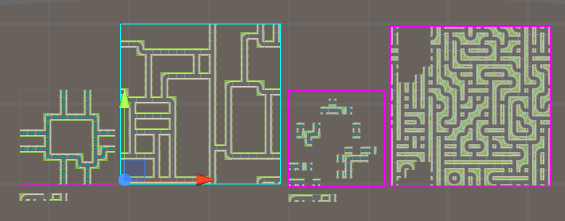
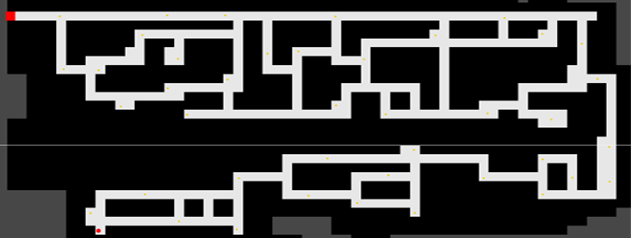

Quality of Wave Function Collapse(WFC) in level generation

For my final year project I have decided to study the the Wave Function Collapse(WFC) Algorthm in the use of level generation evealutating the quaility of out put.
The aim of this study was to find out the quality of levels generated by Wave Function Collapse (WFC) compared to levels generated by manually. The study was carried out with participants being giving four 2D levels made in Unity Game Engine, two levels were manually generated and the other two WFC generated.
From the data that was gathered from the questionnaire, this data shows that on average participants had an easier time of navigating through manually generated levels that the WFC generated levels. The Data also shows that majority of participants thought the first manual level and both WFC levels were made by Wave Function Collapse. While only the second manual level had majority of participants think it was made by manually this shows that the WFC levels were similar enough to manually generated levels so that participants couldn’t tell. Manually generated had no issues with tile placements or the placement of coins while WFC did have these issues. This shows that WFC has the potential of making levels that are of a quality and a look that equal with the manual levels even with the issues with the WFC levels, one of the WFC levels was majority favoured over manual levels showing participants had better experiences on WFC levels.
Participants favoured the second WFC levels over all the other levels which shows that even with issues with coin placement in the level participants had a better experience playing this level, the data also shows that the first WFC was ranked the worst which also shows that participants on average had the worst experience out of the four levels, this shows that the simple WFC algorithm had issues generating levels. So, the quality of WFC generated levels can be that better or equal to that of manually generated levels but will generate levels that is worse than manually generated levels to make sure that the levels are of a quality that is required to make enjoyable levels more constraints will need to be added to the algorithm and maybe adding the ability to give multiple levels as an examples so generate better levels. In conclusion Wave Function Collapse can produce levels that is equal to Manual levels but not as constantly as would be necessary for regular use.
